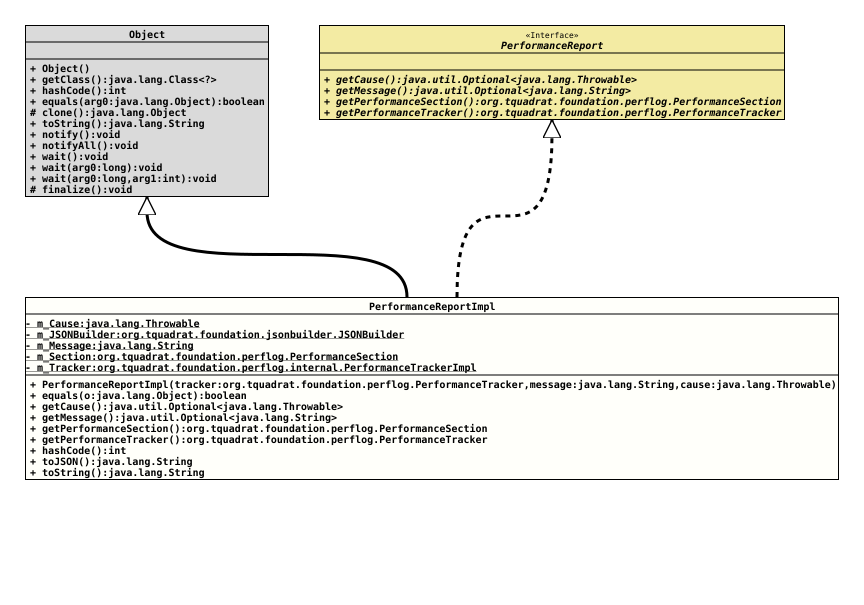

Class PerformanceReportImpl
java.lang.Object
org.tquadrat.foundation.perflog.internal.PerformanceReportImpl
- All Implemented Interfaces:
PerformanceReport
@ClassVersion(sourceVersion="$Id: PerformanceReportImpl.java 1216 2026-05-02 11:16:24Z tquadrat $")
@API(status=INTERNAL,
since="0.25.0")
public final class PerformanceReportImpl
extends Object
implements PerformanceReport
The container for report data going to the
PerfLogMBean.
The method
toJSON()
will generate the report message that is distributed through the
PerfLogMBean.
- Author:
- Thomas Thrien (thomas.thrien@tquadrat.org)
- Version:
- $Id: PerformanceReportImpl.java 1216 2026-05-02 11:16:24Z tquadrat $
- Since:
- 0.25.0
- UML Diagram
-

UML Diagram for "org.tquadrat.foundation.perflog.internal.PerformanceReportImpl"
{kind=link}
-
Field Summary
FieldsModifier and TypeFieldDescriptionprivate final ThrowableThe optional cause that was added to the report in case the performance section was aborted.private final JSONBuilderThe JSON builder that is used to generated the notification messages.private final StringAn optional message that was issued with the report.private final PerformanceSectionThe performance section.private final PerformanceTrackerImplThe performance tracker. -
Constructor Summary
ConstructorsConstructorDescriptionPerformanceReportImpl(PerformanceTracker tracker, String message, Throwable cause) Creates a new instance ofPerformanceReportImpl. -
Method Summary
Modifier and TypeMethodDescriptionfinal booleangetCause()Returns the optional cause that was issued with this report.Returns the optional message that was issued with this report.final PerformanceSectionReturns the performance section that is referred by this report.final PerformanceTrackerReturns the performance tracker that is issued by this report.final inthashCode()final StringtoJSON()Returns the contents of this report instance as a JSON string.final StringtoString()
-
Field Details
-
m_Cause
-
m_JSONBuilder
The JSON builder that is used to generated the notification messages.
-
m_Message
-
m_Section
The performance section. -
m_Tracker
The performance tracker.
-
-
Constructor Details
-
PerformanceReportImpl
Creates a new instance ofPerformanceReportImpl.- Parameters:
tracker- The performance tracker with the data to report.message- An optional message that was issued with this report.cause- The optional exception that can be issued in case the performance section was aborted.
-
-
Method Details
-
equals
-
getCause
-
getMessage
Returns the optional message that was issued with this report.- Specified by:
getMessagein interfacePerformanceReport- Returns:
- An instance of
Optionalthat holds the message.
-
getPerformanceSection
Returns the performance section that is referred by this report.- Specified by:
getPerformanceSectionin interfacePerformanceReport- Returns:
- The performance section.
-
getPerformanceTracker
Returns the performance tracker that is issued by this report.- Specified by:
getPerformanceTrackerin interfacePerformanceReport- Returns:
- The performance tracker.
-
hashCode
-
toJSON
Returns the contents of this report instance as a JSON string.
The JSON has the following structure:
- "PerformanceSection"
[Object] – The definition of the
PerformanceSection.- "Name" [String] – The name of the performance section.
- "Description" [String] – The description for the performance section.
- "ThresholdOnlyReport" [Boolean] – Indicates whether a report is sent only when the threshold was exceeded.
- "Threshold" [optional Object] – The threshold time from the performance section.
- "Timeout" [optional Object] – The timeout time from the performance section.
- "StartTime" [String] – The start time; the time when the performance section was entered.
- "ElapsedTime" [optional Object] – The time that was spent in the performance section. Only present when the operation was not aborted.
- "Context" [optional Object] – The context for the current execution of the performance section. The member names are specific for the respective performance section.
- "Message" [optional String] – A message that was issued with this report.
- "Cause" [optional String] – An exception that was issued with this report as the reason for aborting the performance section.
- Returns:
- A JSON formatted representation of this report instance.
- "PerformanceSection"
[Object] – The definition of the
-
toString
-